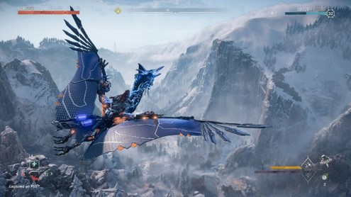

|
|
|
|---|---|---|
|  |
Horizon Forbidden West continues the story of Aloy (Ashly Burch), a young hunter of the Nora tribe and a clone of the Old World scientist Elisabet Sobeck, as she leads a band of companions on a quest to the arcane frontier known as the Forbidden West to find the source of a mysterious plague that kills all it infects.
|
IGN Aloy's quest collides with other people's stories to create something truly memorable. |
User_986344: If you’re willing to take your time and explore through the ruins of a fallen society, where every other corner is teeming with machines that you’ll need to be at the top of your game to destroy, then Horizon Forbidden West is an incredible game and a world that we wanted to return to many hours after the credits rolled. |
Requires a 64-bit processor and operating system OS: Windows 10 64-bits Processor: Intel Core i5-2500K@3.3GHz or AMD FX 6300@3.5GHz Memory: 8 GB RAM Graphics: NVIDIA GeForce GTX 780 (3 GB) or AMD Radeon R9 290 (4GB) DirectX: Version 12 Storage: 100 GB available space
Requires a 64-bit processor and operating system OS: Windows 10 64-bits Processor: Intel Core i7-4770K@3.5GHz or Ryzen 5 1500X@3.5GHz Memory: 16 GB RAM Graphics: NVIDIA GeForce GTX 1060 (6 GB) or AMD Radeon RX 580 (8GB) DirectX: Version 12 Storage: 100 GB available space